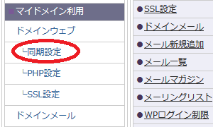

コアサーバーやXREAのドメイン設定方法
バリュードメインのレンタルサーバーには、コアサーバーやXREAなどがありますが、他社と比較するとドメインの設定方法が少し複雑です。
一般的なレンタルサーバーの場合、ネームサーバーを指定すれば、DNSについては自動で設定されるため、通常は特に変更する必要はありません。エックスサーバーなどでもDNSレコードの編集はできますが、こちらは上級者向けの機能となっています。
けれども、バリュードメイン系のコアサーバーやXREA、VALUE-SERVERでは、このDNS設定も自分でする必要があるため、多少は複雑になっています。
ネームサーバーの指定 → DNS設定
とはいえ、こちらも使用しているサーバーを選択すれば自動で設定されるため、一般的なレンタルサーバーと大した違いはありません。
ここではコアサーバーを例に設定方法をご紹介していますが、以下の手順を参考にされるとよいでしょう。
ドメインのネームサーバーやDNSの設定
こちらはレンタルサーバー側ではなく、ドメインの取得事業者側で設定する項目になります。
ドメインの管理が「バリュードメイン」の場合
・ネームサーバーを設定する
バリュードメインで取得した場合、登録レジストラについては「eNom」や「GMO」などの違いがあります。
バリュードメインはGMOグループになったため、最近はデフォルトで「GMO」での登録になるケースが多いと思いますが、以前から利用している場合は「eNom」のケースもあると思います。
ログインしたのち、サイドバーの「ドメイン」→「ドメインの設定操作（登録済みドメイン一覧）」の箇所から、「GMO」などのレジストラを選んで検索すれば、該当するドメインが一覧で表示されるはずです。

次に、変更したいドメインの横にある「ネームサーバー」の箇所をクリックして、ネームサーバーの設定をします。
■登録レジストラが「GMO」の場合
通常、ドメインを設定する場合、上記の「ネームサーバー」をクリックして遷移した画面にて、エックスサーバーやさくらインターネットなどのネームサーバーを手動で入力します。
けれども、コアサーバーやXREAは「バリュードメインのサービス」のため、以下の箇所を選択すれば、自動で入力してくれます。
いくつかの選択肢がありますが、バリュードメインで利用できるネームサーバーには以下の４種類があります。
- VALUE-DOMAIN独自（NS1 ～ NS5.VALUE-DOMAIN.COM）
- VALUE-DOMAIN独自（NS11 ～ NS13.VALUE-DOMAIN.COM）
- eNom（DNS1 ～ DNS5.NAME-SERVICES.COM）
- GMO（01 ～ 04.dnsv.jp）
このうち、バリュードメイン独自のネームサーバーには「ns1～5」と「ns11～13」の２種類がありますが、いずれも大幅に強化されているため、どちらでもよいと思います。
その下の「転送機能付き上位レジストラ」の方を選択すると、上記GMO提供の「01 ～ 04.dnsv.jp」のネームサーバーになりますが、こちらでもよいと思います。
当サイト運営者は一括して「ns1～5」を使用していますが、この「ns1～5」は以下の意味になります。
NS1.VALUE-DOMAIN.COM
NS2.VALUE-DOMAIN.COM
NS3.VALUE-DOMAIN.COM
NS4.VALUE-DOMAIN.COM
NS5.VALUE-DOMAIN.COM
以前までは「ns1～3」で３本でしたが、現在は２本増量で「ns1～5」になっています。
また「ns11～13」は以下の意味になりますが、こちらでもよいかもしれません。
NS11.VALUE-DOMAIN.COM
NS12.VALUE-DOMAIN.COM
NS13.VALUE-DOMAIN.COM
いずれかのネームサーバーの選択して設定を保存します。
上記のURLは変更になっている可能性もあるため、直接は入力せず、管理画面の自動入力で設定することをおすすめします。
・DNSを設定する
次にDNSの設定をしますが、サイドバーにある「DNS情報／URL転送の設定」の箇所から、利用しているレンタルサーバーを選択して自動で設定します。
保存して終了したら、あとはコアサーバーやXREA側でドメインの設定をします。
■登録レジストラが「eNom」だった場合
もし「eNom」で登録していた場合、「当サービス標準のネームサーバー（eNom）」か「VALUE-DOMAIN独自のネームサーバー（国内）」で設定します。
eNomを選択した場合、ネームサーバーは「DNS1 ～ DNS5.NAME-SERVICES.COM」になるかと思いますが、VALUE-DOMAIN独自の「ns1～5」でもよいと思います。
設定したのち、上記と同様に「DNS情報／URL転送の設定」の箇所からDNS設定をします。
ちなみに、画像の「他社提供/自前ネームサーバー」については、他社のさくらインターネットやエックスサーバーなどで使用する際に使います。
ドメインの管理がムームーやFC2など「他社」の場合
他社で管理しているドメインをコアサーバーなどで使用する場合、バリュードメインのサイドバーの箇所にある無料ネームサーバーを利用して登録します。
ドメインの登録が完了したら、ムームーやFC2ドメインなどの管理画面に戻り、バリュードメインの無料ネームサーバーを設定します。
設定するネームサーバーのURLについてはこちらの下部をご参照ください。
→ ネームサーバーの設定
現在、上記ページにて公開されているネームサーバーは以下のようになっていました。
NS1.VALUE-DOMAIN.COM
NS2.VALUE-DOMAIN.COM
NS3.VALUE-DOMAIN.COM
NS4.VALUE-DOMAIN.COM
NS5.VALUE-DOMAIN.COM
こちらのネームサーバーをムームーやFC2などの管理画面にて指定します。こちらは変更されている可能性もあるため、公式サイトにて最新の情報を確認してから設定されることをおすすめします。
■自動DNS設定で契約サーバーを指定
ネームサーバーの設定が終わったら、次にDNSの設定をします。
バリュードメインの「無料ネームサーバー - ドメインのDNS設定」の箇所から編集するとよいでしょう。上記で指定した「NS1～NS5.VALUE-DOMAIN.COM」のネームサーバーが表示されているかと思いますので、こちらで設定します。
利用しているサーバー名を選択すれば、自動で設定されるはずです。
こちらについては、契約したコアサーバーやXREAの管理画面にて自分のサーバー名を確認してから選択するとよいでしょう。
保存したらコアサーバーやXREA側でドメインの設定をします。
コアサーバーやXREA側でのドメイン設定
次に、レンタルサーバー側でドメインの設定をしますが、wwwあり・なしの２パターンを設定しておくことをおすすめします。
１行目はblankにて、２行目以降にドメインを設定していきます。
下部の「ドメイン設定」をクリックして保存しますが、反映されてないなどの理由ですぐに設定できない場合、時間をおいてから設定されるとよいでしょう。
もしくは、設定に間違いのない自信がある場合、「すべてのドメインでAレコードのチェックを行わない(強制設定) 」 にチェックを入れて強制的に設定します。
設定が完了したら、ファイルマネージャーの「public_html」内に、wwwあり・なしのそれぞれのドメイン名でフォルダが作成されているはずです。
HTMLやCSSなどのホームページファイルをこれらのフォルダ内にアップロードしていくことになりますが、それぞれのドメインにアクセスした際、各フォルダ内のホームページが表示されることになります。
概ね、数時間程度ならまだ反映されず、サイトが表示されないケースも多いですが、１日～２日程度の時間をおくとほぼ反映されていることが多いです。
■wwwあり・なしの「同期設定」
さくらインターネットなどの通常のレンタルサーバーの場合、「wwwなし」でドメインを設定すれば、「wwwあり」の方でアクセスしても同一サイトが表示されます。一般的には、これがデフォルトの状態かと思います。
けれども、コアサーバーやXREAの場合は同期設定をしておかないと両方でサイトは表示されません。

wwwあり・なしの両方のフォルダに同じファイルをアップロードしたり、片方にリダイレクト設定をして対応することもできますが、どちらか一方のフォルダを参照するように同期設定をしておくとよいでしょう。
例えば、「wwwあり」（同期先）でアクセスしたら、「wwwなし」（同期元）と同じフォルダを参照するように同期設定しておきます。

この「同期先」と「同期元」がまぎらわしいですが、同期先のディレクトリ内容は削除されるので注意しましょう。逆にいえば、削除してもよいフォルダのドメインを同期先に指定すればよいでしょう。
上の例でいえば、オリジナルの同期元を「example.com」、同期先を「www.example.com」とした場合、「www.example.com」のフォルダは削除されて表示されなくなり、「example.com」のフォルダだけが残るようになります。
矢印の「- >」で判断すればよいかと思いますが、どちらのURLでアクセスした場合でも「example.com」内のファイルが参照され、同一のサイトが表示されるようになります。念のため、ファイルをバックアップしてから設定することをおすすめします。
コアサーバーでの無料独自SSLの設定方法
無料独自SSLの設定については旧コントロールパネルでは設定が難しいです。管理画面がリニューアルされましたので、新しいコンパネの「サイト設定」の箇所から設定されるとよいでしょう。
設定したいドメインの「アクション - 設定変更」の箇所からこちらの画面に移動し、「無料SSL」を選択して保存します。
当サイト運営者もいくつか設定していますが、一般的な「Let's Encrypt」で設定されるはずです。無料の「Let's Encrypt」の場合、それほどの時間はかからず、たいていは１～２時間程度で反映されているケースが多いです。時間を置いて確認してみるとよいでしょう。
同様に「wwwあり・なし」の両方で設定しておくことをおすすめします。